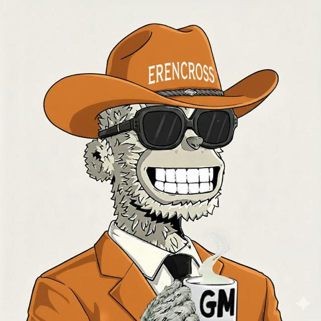

I'm Eren, a Web3 community builder, project manager, and growth strategist focused on execution over empty hype. I partner with ambitious Web3 teams to build engaged communities, manage launches, and create long-term growth through strategy, structure, and consistency.
Every project I join is treated like my own. I believe successful communities are built through trust, communication, and disciplined execution—not shortcuts.
